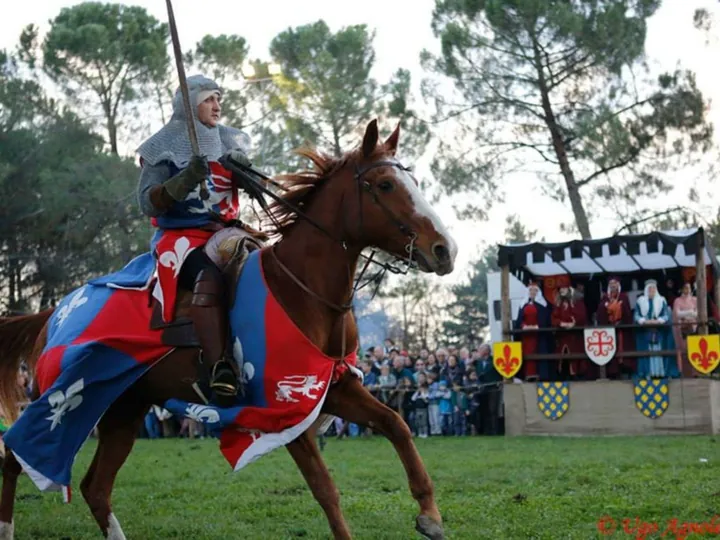

da ven 6 nov a dom 8 nov
Antica Fiera di Santa Lucia di Piave 2026
Taglia il traguardo delle 29 edizioni la tradizionale rievocazione della fiera medievale di Santa Lucia di Piave , organizzata dal Comitato Antica Fiera.
 Indicazioni
Indicazioni
- Costi e prenotazioni
- Costo non indicato · Prenotazione non indicata
- Programma
- Programma da verificare. Apri la fonte ufficiale per orari e possibili aggiornamenti.
- In caso di maltempo
- Nessuna indicazione specifica pubblicata.
- Note
- Acquisito automaticamente dalla fonte.
L’EVENTO
Descrizione completa
Taglia il traguardo delle 29 edizioni la tradizionale rievocazione della fiera medievale di Santa Lucia di Piave , organizzata dal Comitato Antica Fiera.
La fiera, che ogni anno attrae nella piccola cittadina trevigiana numerosi visitatori, è stata realizzata dopo un'attenta ricerca presso gli archivi storici del comune di Treviso, e prevede una grande mostra-mercato di merci tipiche del tempo medievale, come tessuti pregiati, canapa e lane di Fiandra, cavalli e asini.
Si inizia venerdì 6 novembre alle ore 20.30 con il concerto dell'Orchestra SIO dal titolo "Harmonia Mundi" presso la Filanda Grande, mentre sabato 7 il mercatino medievale aprirà 9.00, così come la mostra " Custodes Rerum Pretiosarum " in Ex Filanda. Alle 14.30 prenderà il via il corteo con oltre 400 figuranti, al quale seguirà alle 18.30 lo spettacolo di fuoco " Belfagor" . La giornata si concluderà alle 20.30 in Filanda con il concerto " Viaggio Musicale " con OrchestraForte.
Domenica 8 novembre il mercato e la mostra apriranno alle 9.00. Alle 14.30 è previsto l'arrivo dei Conti in carrozza, con scorta di cavalieri e arcieri. Nel pomeriggio, spettacoli continuativi in più parti del campo e gran finale con lo spettacolo scenografico di fuoco “La notte della strega”.
IL PROGRAMMA
Programma e orari
Appuntamenti raccolti dalle fonti elencate. Dove manca un orario, non è ancora disponibile in questa scheda.
Programma pubblicato
- 2026-11-06 — 2026-11-06 · 20:30:00
- 2026-11-07 — 2026-11-08 · 09:00:00
INFORMAZIONI UTILI
Prima di partire
- Controllare la fonte prima di partire.
ORGANIZZAZIONE